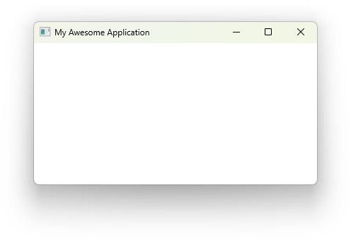
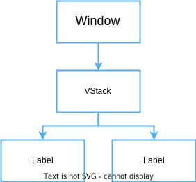

Foreword
Welcome to the Vizia book!
Vizia is a crate for building desktop GUI applications. It presently supports Windows, Linux, and MacOS desktop targets.
The Vizia project's home is https://github.com/vizia and the main Vizia repository is https://github.com/vizia/vizia.
This book aims to act as a guide and reference for Vizia, and hopes to teach you how to use Vizia, whether you've done any GUI programming in the past or not.
Getting Started
Installing Rust
The Vizia framework is built using the Rust programming language. Currently, to use Vizia, you will need to install the Rust compiler by following the instructions over at https://www.rust-lang.org/learn/get-started.
Running the Examples
The Vizia repository on github contains a number of example applications. To run these examples, first clone the repository to a local directory, then with your terminal of choice, navigate to this directory and run the following command:
cargo run --example name_of_example
Where name_of_example should be replaced with the example name.
Join the Community
For help with vizia, or to get involved with contributing to the project, come join us on our Discord server.
Overview
In this quick start guide we'll build a very simple counter application consisting of two buttons, one for incrementing the counter and one for decrementing, and a label showing the counter value.
This guide will introduce the reader to the basics of vizia, including setting up an application, composing and modifying views, layout, styling, reactivity, localization and accessibility. The final application will look like the following:

Reactive UI
Vizia is a reactive UI framework. This means that visual elements which represent some state of the application will update when this state changes. Interacting with these visual elements causes the application state to change.
A reactive UI then is a feedback loop of application state change and visual element updates.
In Vizia, this pattern can be broken down into four concepts:
- Models - Data representing the state of an application.
- Views - The visual elements which present the application state as a graphical user interface.
- Binding - The link between model data and views which causes them to update when the data changes.
- Events - Messages which views send to models to trigger changes to the data.
Setting Up
Creating a new project
First, let's create a new Rust project using the following command:
cargo new --bin hello_vizia
This will generate a hello_vizia directory with the following contents:
.
├── Cargo.toml
├── .git
├── .gitignore
└── src
└── main.rs
Adding Vizia as a dependency
Open the Cargo.toml file and add the following to the dependencies:
[package]
name = "hello_vizia"
version = "0.1.0"
edition = "2021"
[dependencies]
vizia = {git = "https://github.com/vizia/vizia"}
Creating an Application
The first step to building a GUI with vizia is to create an application. Creating a new application creates a root window and a context. Views declared within the closure passed to Application::new() are added to the context and rendered into the root window.
Add the following code to the main.rs file, replacing the hello world code that was generated for us:
use vizia::prelude::*;
fn main() -> Result<(), ApplicationError> {
Application::new(|cx|{
// Content goes here
})
.run()
}The run() method on the Application causes the program to enter the event loop and for the main window to display.
We can run our application with cargo run in the terminal, which should result in the following:

Modifying the Window
When creating an Application the properties of the window can be changed using window modifiers. These modifiers are methods called on the application prior to calling run().
For example, the title() and inner_size() window modifiers can be used to set the title and size of the window respectively.
use vizia::prelude::*;
fn main() -> Result<(), ApplicationError> {
Application::new(|cx|{
})
.title("Counter")
.inner_size((400, 150))
.run()
}

Adding Views
Views are the building bocks of a vizia GUI and are used to visually present model data and to act as controls which, when interacted with, send events to mutate model data.
We'll learn more about models and events in the following sections.
Adding a label
We can declare a Label view with the following code:
use vizia::prelude::*;
fn main() -> Result<(), ApplicationError> {
Application::new(|cx|{
Label::new(cx, "Hello Vizia");
})
.title("Counter")
.inner_size((400, 150))
.run()
}The first argument to the new() method of the label is a mutable reference to Context, shortened to cx. This allows the view to build itself into the application. For the second argument we pass it a string to display.

Modifying Views
Modifiers are used to customize the appearance and behavior of views in a declarative way. Many of the built-in modifiers in Vizia can be applied to any View, which includes built-in views as well as user-defined views.
Customizing the label with a modifier
Applying modifiers to a view changes the properties of a view without rebuilding it. For example, we can use the background_color() modifier to set the background color of the label view:
Label::new(cx, "Hello Vizia")
.background_color(Color::rgb(200, 200, 200));
Note how this overrides the default background color of the label, which is provided by a CSS stylesheet.
Multiple modifiers can be chained together to achieve more complex view configuration.
Label::new(cx, "Hello Vizia")
.width(Pixels(200.0))
.border_width(Pixels(1.0))
.border_color(Color::black())
.background_color(Color::rgb(200, 200, 200));
View specific modifiers
Some views have modifiers which are specific to that view type. For example, the Slider view has a modifier for setting the slider range:
Slider::new(cx, AppData::value)
.range(0.0..100.0);View specific modifiers can still be combined with regular modifiers, and the order doesn't matter. Both of these produce the same result:
Slider::new(cx, AppData::value)
.range(0.0..100.0)
.width(Pixels(200.0));Slider::new(cx, AppData::value)
.width(Pixels(200.0))
.range(0.0..100.0);Composing Views
Composition of views is achieved through container views. These views take a closure which allows us to build child views within them. Some container views may also arrange their content in a particular way.
For example, the HStack container view will arrange its contents into a horizontal row. Let's use this to declare the rest of the views for our counter application:
use vizia::prelude::*;
fn main() -> Result<(), ApplicationError> {
Application::new(|cx|{
HStack::new(cx, |cx|{
Button::new(cx, |cx| Label::new(cx, "Decrement"));
Button::new(cx, |cx| Label::new(cx, "Increment"));
Label::new(cx, "0");
});
})
.title("Counter")
.inner_size((400, 150))
.run()
}For now we have hard-coded the label to display the number 0, but later we will hook this up to some model data so that it updates when the data changes. We've also removed the modifiers from the label, as we'll be replacing these with CSS styling later on.
Note that the Button view is also a container, and is designed to allow things like a button with both text and a leading or trailing icon.

Composing views together forms a tree, where each view has a single parent and zero or more children. For example, for the code above the view tree can be depicted with the following diagram:

Customizing the Layout
So far we have a horizontal row of buttons and a label, but they're positioned in the top left corner. Let's use layout modifiers to position the views in the center of the window with some space between them.
Centering the views
By default the HStack view will stretch to fill its parent, in this case the window. We can center the contents of the HStack using the alignment() modifier and setting it to Alignment::Center. Then we can add horizontal space between the children using the gap() modifier:
use vizia::prelude::*;
fn main() -> Result<(), ApplicationError> {
Application::new(|cx|{
HStack::new(cx, |cx|{
Button::new(cx, |cx| Label::new(cx, "Decrement"));
Button::new(cx, |cx| Label::new(cx, "Increment"));
Label::new(cx, "0");
})
.alignment(Alignment::Center)
.gap(Pixels(20.0));
})
.inner_size((400, 100))
.run()
}
Understanding the layout system
The layout system used by vizia is called morphorm and can achieve results similar to flexbox on the web but with fewer concepts to learn. Vizia determines the position and size of views based on a number of layout properties which can be configured. A detailed guide of the layout system can be found here.
Styling the Application
Previously we saw how modifiers can be used to style views inline. However, vizia also allows views to be styled with Cascading Style Sheets (CSS) so that style rules can be shared by multiple views. Additionally, stylesheets can be reloaded at runtime by pressing the F5 key.
Adding class names to the views
First we'll add some class names to our views, using the class style modifier, so we can target them with a CSS stylesheet:
use vizia::prelude::*;
fn main() -> Result<(), ApplicationError> {
Application::new(|cx|{
HStack::new(cx, |cx|{
Button::new(cx, |cx| Label::new(cx, "Decrement"))
.class("dec");
Button::new(cx, |cx| Label::new(cx, "Increment"))
.class("inc");
Label::new(cx, "0")
.class("count");
})
.class("row");
})
.title("Counter")
.inner_size((400, 150))
.run()
}Creating a stylesheet
Next, we'll create a style.css file in the src directory with the following CSS code:
.row {
alignment: center;
gap: 20px;
}
button {
border-width: 0px;
}
button.dec {
background-color: rgb(170, 50, 50);
}
button.inc {
background-color: rgb(50, 170, 50);
}
label.count {
alignment: center;
border-width: 1px;
border-color: #808080;
border-radius: 4px;
width: 50px;
height: 32px;
}
Adding the stylesheet to the app
Finally, we'll add the CSS file to the vizia application using the .add_stylesheet() function on the context. Here we're using the include_style!() macro, which will dynamically load the stylesheet at runtime in debug mode, but include the stylesheet into the binary in release mode. This should be done just after creating the application:
use vizia::prelude::*;
fn main() -> Result<(), ApplicationError> {
Application::new(|cx|{
// Add the stylesheet to the app
cx.add_stylesheet(include_style!("src/style.css"))
.expect("Failed to load stylesheet");
HStack::new(cx, |cx|{
Button::new(cx, |cx| Label::new(cx, "Decrement"))
.class("dec");
Button::new(cx, |cx| Label::new(cx, "Increment"))
.class("inc");
Label::new(cx, "0")
.class("count");
})
.class("row");
})
.title("Counter")
.inner_size((400, 150))
.run()
}If we run the app now with cargo run we get the following:
Animating Styles with Transitions
Many of the style and layout properties in vizia can be animated. The simplest way to animate style properties is through CSS transitions.
Transitions are animations for style rule properties which apply when a view matches that rule. Transitions are specified with the transition CSS property, and you must specify the property to animate and the duration of the animation. Optionally you can also specify any delay on the animation, as well as the timing function used.
The default styling for some of the built-in views already has some of these transition. For example, if you hover a button you'll see its background color animate to a slightly lighter color.
Declaring a transition
For example, we can create a transition for the background color of a view when hovered:
use vizia::prelude::*;
const STYLE: &str = r#"
.my_view {
background-color: red;
}
.my_view:hover {
background-color: blue;
transition: background-color 100ms;
}
"#;
fn main () -> Result<(), ApplicationError> {
Application::new(|cx|{
cx.add_stylesheet(STYLE);
Element::new(cx)
.class("my_view")
.size(Pixels(200.0));
})
.run()
}
Note here that we have not used the include_style!() macro within the call to cx.add_stylesheet as the stylesheet is defined as a constant within the Rust code.
// GIF here
Note that the transition only occurs when the cursor hovers the element and not when the cursor leaves the element (unless the transition did not complete when the cursor left). This is because the transition has been specified on the :hover state of the element, and so the background color will transition when going to this state.
To transition back again, we need to specify a transition on the non-hover state as well:
.my_view {
background-color: red;
transition: background-color 100ms;
}
.my_view:hover {
background-color: blue;
transition: background-color 100ms;
}
// GIF here
Model Data
So far we've created the views for our counter application but we haven't declared the application data with the count value we want to display and modify.
Application data in Vizia is stored in models. Views can then bind to the data in these models in order to react to changes in the data.
Declaring a model
A model definition can be any type, typically a struct, which implements the Model trait:
pub struct AppData {
pub count: i32,
}
impl Model for AppData {}Building the model into the tree
To use a model, an instance of the data must be built into the application with the build() method:
use vizia::prelude::*;
fn main() -> Result<(), ApplicationError> {
Application::new(|cx|{
AppData { count: 0 }.build(cx); // Build the data into the app
HStack::new(cx, |cx|{
Button::new(cx, |cx| Label::new(cx, "Decrement"))
.class("dec");
Button::new(cx, |cx| Label::new(cx, "Increment"))
.class("inc");
Label::new(cx, "0")
.class("count");
})
.class("row");
})
.title("Counter")
.inner_size((400, 200))
.run()
}
This builds the model data into the tree, in this case at the root Window. Internally, models and views are stored separately, however, for processes like event propagation, models can be thought of as existing within the tree, with an associated view.
Therefore, the model-view tree for the above code can be depicted with the following diagram:

If the AppData had been built within the contents of the HStack, then the model would be associated with the HStack rather than the Window.
Lenses and Data Binding
Now that we have some model data we can bind the count to the Label view.
Data binding is the concept of linking model data to views, so that when the model data is changed, the views observing this data update in response.
In Vizia, data binding is achieved through the use of lenses. A lens is an object which allows you to select some part of a model and inspect its value. These lens objects are then used to form a binding between views and these parts of the model, updating when only these specific parts have changed.
Generating lenses
The Lens derive macro can be used to generate a lens for each field of a struct. These lenses can then be used to transform a reference to the struct into a reference to each of its fields. The generated lenses are given the same name as the field and placed in a module with the same name as the struct. For example, deriving Lens on the model we defined before:
#[derive(Lens)]
pub struct AppData {
count: i32,
}
impl Model for AppData {}A lens to the count field of the AppData struct is generated as AppData::count.
Binding the label
With the generated AppData::count lens, we can bind the count data to the Label by passing the lens in place of the string:
use vizia::prelude::*;
fn main() -> Result<(), ApplicationError> {
Application::new(|cx|{
AppData { count: 0 }.build(cx);
HStack::new(cx, |cx|{
Button::new(cx, |cx| Label::new(cx, "Decrement"))
.class("dec");
Button::new(cx, |cx| Label::new(cx, "Increment"))
.class("inc");
Label::new(cx, AppData::count) // Bind the label to the count data
.class("count");
})
.class("row");
})
.title("Counter")
.inner_size((400, 100))
.run()
}This sets up a binding which updates the value of the label whenever the count changes. We can depict this with the following diagram, where the green arrow shows the direct link between the data and the label:

Modifier bindings
Many modifiers also accept a lens as well as a value. When a lens is supplied to a modifier, a binding is set up which will update the modified property when the bound to model data changes. For example:
#[derive(Lens)]
pub struct AppData {
color: Color,
}
...
Label::new(cx, "Hello World")
.background_color(AppData::color);Mutating State with Events
The label is now bound to the data so that it updates when the count changes, so now we need to hook up the buttons to change the count.
Vizia uses events to communicate actions to update model or view data. These events propagate through the tree, typically from the view which emits the event, up through the ancestors of the view, to the main window and through any models on the way.
Declaring events
An event contains a message which can be any type, but is typically an enum. We'll declare an event enum with two variants, one for incrementing the count and one for decrementing:
pub enum AppEvent {
Increment,
Decrement,
}Emitting events
Events are usually emitted in response to some action on a view. For this we can the on_press callback provided by the Button. When the button is pressed this callback is called. We can use the provided EventContext to emit our events up the tree:
Button::new(cx, |cx| Label::new(cx, "Decrement"))
.on_press(|ex| ex.emit(AppEvent::Decrement))
.class("dec");
Button::new(cx, |cx| Label::new(cx, "Increment"))
.on_press(|ex| ex.emit(AppEvent::Increment))
.class("inc");The flow of events from the buttons, up through the visual tree, to AppData model can be described with the following diagram, where the red arrows indicate the direction of event propagation:

Handling events
Events are handled by views and models with the event() method of the View or Model traits. Let's fill in the Model implementation by implementing the event method:
impl Model for AppData {
fn event(&mut self, cx: &mut EventContext, event: &mut Event) {
event.map(|app_event, meta| match app_event {
AppEvent::Decrement => self.count -= 1,
AppEvent::Increment => self.count += 1,
});
}
}Calling map() on an event attempts to cast the event message to the specified type and calls the provided closure if it succeeds.
The closure provides the message type and an EventMeta, which can be used to query the origin and target views of the event, or to consume the event to prevent it propagating further.
If we run the application now we can see that the buttons cause the state to mutate, which then causes the label to update.

Making the Counter Reusable
In this section we're going to turn our counter into a component by declaring a custom view. This will make our counter reusable so we can easily create multiple instances or export the counter as a component in a library.
Step 1: Creating a custom view struct
First we declare a struct which will contain any view-specific state:
pub struct Counter {}Although we could store the count value within the view, we've chosen instead to make this view 'stateless', and instead we'll provide it with a lens to bind to some external state (typically from a model), and some callbacks for emitting events when the buttons are pressed.
Step 2: Implementing the view trait
Next, we'll implement the View trait for the custom counter view:
impl View for Counter {}The View trait has methods for responding to events and for custom drawing, but for now we'll leave this implementation empty.
Step 3: Building the sub-components of the view
Next we'll implement a constructor for the counter view. To use our view in a vizia application, the constructor must build the view into the context, which returns a Handle we can use to apply modifiers on our view.
impl Counter {
pub fn new(cx: &mut Context) -> Handle<Self> {
Self {
}.build(cx, |cx|{
})
}
}The build() function, provided by the View trait, takes a closure which we can use to construct the content of the custom view. Here we move the code which makes up the counter:
impl Counter {
pub fn new(cx: &mut Context) -> Handle<Self> {
Self {
}.build(cx, |cx|{
HStack::new(cx, |cx|{
Button::new(cx, |cx| Label::new(cx, "Decrement"))
.on_press(|ex| ex.emit(AppEvent::Decrement))
.class("dec");
Button::new(cx, |cx| Label::new(cx, "Increment"))
.on_press(|ex| ex.emit(AppEvent::Increment))
.class("inc");
Label::new(cx, AppData::count)
.class("count");
})
.class("row");
})
}
}Step 4: User-configurable binding
The label within the counter is currently using the AppData::count lens, however, this will only work if that specific lens is in scope. To make this component truly reusable we need to pass a lens in via the constructor. To do this we use a generic and constrain the type to implement the Lens trait. This trait has a Target associated type which we can use to specify that the binding is for an i32 value. Then we simply pass the lens directly to the constructor of the label:
impl Counter {
pub fn new<L>(cx: &mut Context, lens: L) -> Handle<Self>
where
L: Lens<Target = i32>,
{
Self {
}.build(cx, |cx|{
HStack::new(cx, |cx|{
Button::new(cx, |cx| Label::new(cx, "Decrement"))
.on_press(|ex| ex.emit(AppEvent::Decrement))
.class("dec");
Button::new(cx, |cx| Label::new(cx, "Increment"))
.on_press(|ex| ex.emit(AppEvent::Increment))
.class("inc");
Label::new(cx, lens)
.class("count");
})
.class("row");
})
}
}Step 5 - User-configurable events
The last part required to make the counter truly reusable is to remove the dependency on AppEvent. To do this we'll add a couple of callbacks to the counter to allow the user to emit their own events when the buttons are presses.
Adding callbacks to the view
First, change the Counter struct to look like this:
pub struct Counter {
on_increment: Option<Box<dyn Fn(&mut EventContext)>>,
on_decrement: Option<Box<dyn Fn(&mut EventContext)>>,
}These boxed function pointers provide the callbacks that will be called when the increment and decrement buttons are pressed.
Custom modifiers
Next we'll need to add some custom modifiers so the user can configure these callbacks. To do this we can define a trait and implement it on Handle<'_, Counter>:
pub trait CounterModifiers {
fn on_increment<F: Fn(&mut EventContext) + 'static>(self, callback: F) -> Self;
fn on_decrement<F: Fn(&mut EventContext) + 'static>(self, callback: F) -> Self;
}We can use the modify() method on Handle to directly set the callbacks when implementing the modifiers:
impl<'a> CounterModifiers for Handle<'a, Counter> {
fn on_increment<F: Fn(&mut EventContext) + 'static>(self, callback: F) -> Self {
self.modify(|counter| counter.on_increment = Some(Box::new(callback)))
}
fn on_decrement<F: Fn(&mut EventContext) + 'static>(self, callback: F) -> Self {
self.modify(|counter| counter.on_decrement = Some(Box::new(callback)))
}
}Internal event handling
Unfortunately we can't just call these callbacks from the action callback of the buttons. Instead we'll need to emit some internal events which the counter can receive, and then the counter can call the callbacks. Define an internal event enum for the counter like so:
pub enum CounterEvent {
Decrement,
Increment,
}We can then use this internal event with the buttons:
Button::new(
cx,
|ex| ex.emit(CounterEvent::Decrement),
|cx| Label::new(cx, "Decrement")
)
.class("dec");
Button::new(
cx,
|ex| ex.emit(CounterEvent::Increment),
|cx| Label::new(cx, "Increment")
)
.class("inc");Finally, we respond to these events in the event() method of the View trait for the Counter, calling the appropriate callback:
impl View for Counter {
fn event(&mut self, cx: &mut EventContext, event: &mut Event) {
event.map(|counter_event, meta| match counter_event{
CounterEvent::Increment => {
if let Some(callback) = &self.on_increment {
(callback)(cx);
}
}
CounterEvent::Decrement => {
if let Some(callback) = &self.on_decrement {
(callback)(cx);
}
}
});
}
}To recap, now when the user presses on one of the buttons, the button will emit an internal CounterEvent, which is then handled by the Counter view to call the appropriate callback, which the user can set using the custom modifiers we added using the CounterModifiers trait.
Step 6: Using the custom view
Finally, we can use our custom view in the application:
fn main() -> Result<(), ApplicationError> {
Application::new(|cx|{
cx.add_stylesheet(include_style!("src/style.css"))
.expect("Failed to load stylesheet");
AppData { count: 0 }.build(cx);
Counter::new(cx, AppData::lens)
.on_increment(|cx| cx.emit(AppEvent::Increment))
.on_decrement(|cx| cx.emit(AppEvent::Decrement));
})
.title("Counter")
.inner_size((400, 150))
.run()
}
We pass it the AppData::lens, but the custom view can accept any lens to an i32 value. We also provide it with callbacks that should trigger when the increment and decrement buttons are pressed. In this case the callbacks will emit AppEvent events to mutate the model data.
When we run our app now it will seem like nothing has changed. However, now that our counter is a component, we could easily add multiple counters all bound to the same data (or different data):
fn main() {
Application::new(|cx|{
cx.add_stylesheet(include_style!("src/style.css"))
.expect("Failed to load stylesheet");
AppData { count: 0 }.build(cx);
Counter::new(cx, AppData::count)
.on_increment(|cx| cx.emit(AppEvent::Increment))
.on_decrement(|cx| cx.emit(AppEvent::Decrement));
Counter::new(cx, AppData::count)
.on_increment(|cx| cx.emit(AppEvent::Increment))
.on_decrement(|cx| cx.emit(AppEvent::Decrement));
Counter::new(cx, AppData::count)
.on_increment(|cx| cx.emit(AppEvent::Increment))
.on_decrement(|cx| cx.emit(AppEvent::Decrement));
})
.title("Counter")
.inner_size((400, 150))
.run();
}

Localizing the Application
An important part of building a GUI is making sure the application is usable for different regions around the world. Vizia uses fluent to provide translatable text for an application.
Creating fluent files
Fluent files provide a key-value store for translated text strings which vizia uses to localize text in an application.
Let's add two fluent (.ftl) files to our application. We'll call them the same name, counter.ftl, but place them within separate directories, en-Us and es, within a resources directory.
Your project folder structure should now look like this:
.
├── Cargo.toml
├── .git
├── .gitignore
└── src
├── resources
│ ├── en-US
│ │ └── counter.ftl
│ └── es
│ └── counter.ftl
├── main.rs
└── style.css
resources/en-US/counter.ftl
inc = Increment
dec = Decrement
resources/es/counter.ftl
inc = Incrementar
dec = Decrementar
Adding translations to the application
cx.add_translation(
langid!("en-US"),
include_str!("resources/en-US/counter.ftl").to_owned(),
);
cx.add_translation(
langid!("es"),
include_str!("resources/es/counter.ftl").to_owned(),
);Localizing text
To localize the text in our application we use the Localized type within the labels of the buttons, passing the translation keys to the constructor:
Button::new(cx, |cx| Label::new(cx, Localized::new("dec")));
Button::new(cx, |cx| Label::new(cx, Localized::new("inc")));When the application is run these Localized objects are replaced with the translated strings from the fluent files based on the system locale.
Testing localization
The locale used for selecting translations is stored in a model called the Environment. By default the locale used for translations is set to the system locale, however, we can use an EnvironmentEvent to set the locale to a user-specified value. This is useful for testing the localization of an application.
cx.emit(EnvironmentEvent::SetLocale(langid!("es")));If we run our app now we'll see that the text has been translated into Spanish. Because the buttons are set up to hug their content, the widths of the buttons have automatically updated to accommodate the slightly longer text strings.

Note that if you're following this tutorial on a machine where the system locale is already set to Spanish then you'll see the Spanish translations without needing to emit the SetLocale event. To see the English versions of the text replace the "es" with "en-US" when emitting the event.
Making the Application Accessible
Making the application accessibility is about making it so that assistive technologies, such as a screen reader, can navigate and query the application.
Our application so far is actually already mostly accessible as the built-in views, such as the buttons, are already set up to be accessible. However, even though the built-in views are accessible, this does not mean the app is automatically accessible.
For the case of our counter, when the increment or decrement buttons are pressed, causing the count to change, a screen reader does not know to speak the current count to inform the user of the change. To account for this we can use something called a 'live region'.
A live region is a view which has changing content but is not itself interactive. In the counter application a label shows the current counter value. This label is not itself interactive but has content which changes, and so should be marked as a live region. This will cause, for example, a screen reader to announce the value when the count changes.
A view can be marked as a live region with the live() modifier:
Label::new(cx, AppData::count)
.class("count")
.live(Live::Assertive);If we were to use our counter application with a screen reader enabled now, the count value would be spoken when either of the buttons are pressed.
The Final Code
Rust
use vizia::prelude::*;
// Define the application data
#[derive(Lens)]
pub struct AppData {
count: i32,
}
// Define events for mutating the application data
pub enum AppEvent {
Increment,
Decrement,
}
// Mutate application data in response to events
impl Model for AppData {
fn event(&mut self, cx: &mut EventContext, event: &mut Event) {
event.map(|app_event, meta| match app_event {
AppEvent::Decrement => self.count -= 1,
AppEvent::Increment => self.count += 1,
});
}
}
// Define a custom view for the counter
pub struct Counter {
on_increment: Option<Box<dyn Fn(&mut EventContext)>>,
on_decrement: Option<Box<dyn Fn(&mut EventContext)>>,
}
impl Counter {
pub fn new<L>(cx: &mut Context, lens: L) -> Handle<Self>
where
L: Lens<Target = i32>
{
Self {
on_decrement: None,
on_increment: None,
}.build(cx, |cx|{
HStack::new(cx, |cx|{
Button::new(cx, |cx| Label::new(cx, Localized::new("dec")))
.on_press(|ex| ex.emit(CounterEvent::Decrement))
.class("dec");
Button::new(cx, |cx| Label::new(cx, Localized::new("inc")))
.on_press(|ex| ex.emit(CounterEvent::Increment))
.class("inc");
Label::new(cx, lens)
.class("count")
.live(Live::Assertive);
})
.class("row");
})
}
}
// Internal events
pub enum CounterEvent {
Decrement,
Increment,
}
// Handle internal events
impl View for Counter {
fn event(&mut self, cx: &mut EventContext, event: &mut Event) {
event.map(|counter_event, meta| match counter_event{
CounterEvent::Increment => {
if let Some(callback) = &self.on_increment {
(callback)(cx);
}
}
CounterEvent::Decrement => {
if let Some(callback) = &self.on_decrement {
(callback)(cx);
}
}
});
}
}
// Custom modifiers
pub trait CounterModifiers {
fn on_increment<F: Fn(&mut EventContext) + 'static>(self, callback: F) -> Self;
fn on_decrement<F: Fn(&mut EventContext) + 'static>(self, callback: F) -> Self;
}
// Implement custom modifiers
impl<'a> CounterModifiers for Handle<'a, Counter> {
fn on_increment<F: Fn(&mut EventContext) + 'static>(self, callback: F) -> Self {
self.modify(|counter| counter.on_increment = Some(Box::new(callback)))
}
fn on_decrement<F: Fn(&mut EventContext) + 'static>(self, callback: F) -> Self {
self.modify(|counter| counter.on_decrement = Some(Box::new(callback)))
}
}
fn main() -> Result<(), ApplicationError> {
Application::new(|cx|{
cx.add_stylesheet(include_style!("src/style.css")).expect("Failed to load stylesheet");
cx.add_translation(
langid!("en-US"),
include_str!("resources/en-US/counter.ftl").to_owned(),
);
cx.add_translation(
langid!("es"),
include_str!("resources/es/counter.ftl").to_owned(),
);
// Uncomment to test with spanish locale.
// If system locale is already Spanish, replace "es" with "en-US".
// cx.emit(EnvironmentEvent::SetLocale(langid!("es")));
// Build model data into the application
AppData { count: 0 }.build(cx);
// Add the custom counter view and bind to the model data
Counter::new(cx, AppData::count)
.on_increment(|cx| cx.emit(AppEvent::Increment))
.on_decrement(|cx| cx.emit(AppEvent::Decrement));
})
.title("Counter")
.inner_size((400, 150))
.run()
}CSS
.row {
child-space: 1s;
col-between: 20px;
}
button {
border-width: 0px;
}
button.dec {
background-color: rgb(170, 50, 50);
}
button.inc {
background-color: rgb(50, 170, 50);
}
label.count {
child-space: 1s;
border-width: 1px;
border-color: #808080;
border-radius: 4px;
width: 50px;
height: 32px;
}
Fluent
resources/en-US/counter.ftl
inc = Increment
dec = Decrement
resources/es/counter.ftl
inc = Incrementar
dec = Decrementar
Creating an Application
The first step to building a GUI with vizia is to create an application. Creating a new application creates a main window and a context. Views declared within the closure passed to Application::new() are added to the context and rendered into the main window.
use vizia::prelude::*;
fn main() -> Result<(), ApplicationError> {
Application::new(|cx|{
// Content goes here
})
.run()
}Calling run() on the Application causes the program to enter the event loop and for the main window to display.

Multiple Windows
While an application provides a default main window, additional windows can be created with the Window view:
use vizia::prelude::*;
fn main() -> Result<(), ApplicationError> {
Application::new(|cx|{
// Main window content
Window::new(cx, |cx| {
// Secondary window content
});
})
.run()
}
Windows, like other views, are built into the view tree. Therefore, they can access data in models further up the tree from them, and if the containing view is destroyed the window is closed.
A binding view can be used to a conditionally create windows:
Binding::new(cx, AppData::show_window, |cx, show_subwindow| {
if show_subwindow.get(cx) {
Window::new(cx, |cx| {
})
.on_close(|cx| {
cx.emit(AppEvent::WindowClosed);
});
}
});Here we've used the on_close window modifier to reset the app state when the window is closed by the user.
Modifying Window Properties
The properties of a window can be changed using window modifiers. For the main window, these modifiers are called on the application prior to calling run().
For example, the title() and inner_size() window modifiers can be used to set the title and size of the window respectively.
use vizia::prelude::*;
fn main() -> Result<(), ApplicationError> {
Application::new(|cx|{
})
.title("My Awesome Application")
.inner_size((400, 200))
.run()
}
Adding views
Views are the building bocks of a vizia GUI and are used to visually present model data and to act as controls which, when interacted with, send events to mutate model data.
We'll learn more about models and events in the following sections.
Declaring views
For example, we can declare a Label view to display a text string:
use vizia::prelude::*;
fn main() -> Result<(), ApplicationError> {
Application::new(|cx|{
Label::new(cx, "Hello World");
})
.inner_size((400, 200))
.run()
}
The first argument to the new() method of the label is a mutable reference to Context, shortened to cx. This allows the view to build itself into the application and is passed from view to view.
Composing views
Composition of views is achieved through container views, which typically take a closure which allows us to build child views within it. Some container views may arrange their content in a particular way.
For example, the VStack container view will arrange its contents into a vertical column:
use vizia::prelude::*;
fn main() -> Result<(), ApplicationError> {
Application::new(|cx|{
VStack::new(cx, |cx|{
Label::new(cx, "Hello");
Label::new(cx, "World");
});
})
.inner_size((400, 100))
.run()
}
Composing views together forms a tree, where each view has a single parent and zero or more children. For example, for the code above the view tree can be depicted with the following diagram:

The Window is the parent of the VStack, while the VStack is the parent of both the Labels. Therefore, the Window is an ancestor of the Labels and the Labels are descendants of the window. This terminology is relevant when writing CSS style rules, which we'll cover later in this guide.
Mofiying Views
Modifiers are used to customize the appearance and behaviour of views in a declarative way. Many of the built-in modifiers in Vizia can be applied to any View, which includes built-in views as well as user-defined views.
Customize a view with a modifier
Modifiers are functions which are called on a Handle, which is returned by the constructor of all views. Applying modifiers to a view changes the properties of a view without rebuilding it. For example, we can use the background_color() modifier to set the background color of a label view:
Label::new(cx, "Hello World")
.background_color(Color::rgb(255, 0, 0));
Multiple modifiers can be chained together to acheieve more complex view configuration.
Label::new(cx, "Hello World")
.width(Pixels(200.0))
.border_width(Pixels(1.0))
.border_color(Color::black())
.background_color(Color::rgb(200, 200, 200));
View specific modifiers
Some views have modifiers which are specific to that view type. For example, the Slider view has a modifier for setting the slider range:
Slider::new(cx, AppData::value)
.range(0.0..100.0);View specific modifiers can still be combined with regular modifiers, and the order doesn't matter. Both of these produce the same result:
Slider::new(cx, AppData::value)
.range(0.0..100.0)
.width(Pixels(200.0));Slider::new(cx, AppData::value)
.width(Pixels(200.0))
.range(0.0..100.0);Modifier bindings
Many modifiers also accept a lens as well as a value. When a lens is supplied to a modifier, a binding is set up which will update the modified property when the bound to model data changes. For example:
#[derive(Lens)]
pub struct AppData {
color: Color,
}
...
Label::new(cx, "Hello World")
.background_color(AppData::color);Custom View Modifiers
To create a set of custom view modifiers, first declare a trait with the desired modifier functions. The modifier functions must take self by value and return Self.
pub trait CustomModifiers: {
fn title(self) -> Self;
}Next, we can implement the custom modifiers for all views like so:
impl<'a, V: View> CustomModifiers for Handle<'a, V> {
fn title(self) -> Self {
self.font_size(24.0).font_weight(FontWeightKeyword::Bold)
}
}Sometimes it may be more appropriate to implement the custom modifiers for specific views. For example, we can implement the custom modifiers just the Label view like so:
impl<'a> CustomModifiers for Handle<'a, Label> {
fn title(self) -> Self {
self.font_size(24.0).font_weight(FontWeightKeyword::Bold)
}
}As long as CustomModifiers is imported we can then use the custom title() modifier like any other modifier on a label:
Label::new("Some Kind of Title").title();
Models
Application data in Vizia is stored in models. Views can then bind to the data in these models in order to react to changes in the data.
Declaring Models
A model definition can be any type, typically a struct, which implements the Model trait:
pub struct Person {
pub name: String,
pub email: String,
}
impl Model for Person {}Building Models
A model definition can be built into the view tree with the build() method:
use vizia::prelude::*;
fn main() -> Result<(), ApplicationError> {
Application::new(|cx|{
Person {
name: String::from("John Doe"),
email: String::from("john.doe@company.com"),
}.build(cx);
HStack::new(cx, |cx|{
Label::new(cx, "Hello");
Label::new(cx, "World");
});
})
.run();
}
This builds the model data into the tree, in this case at the root Window.
Internally, Vizia enforces a separation between views and models by storing them separately. However, for processes like event propagation, models can be thought of as existing within the tree, with an associated parent view.
The model-view tree for the above code can be depicted with the following diagram:

If the AppData had been built within the contents of the HStack, then the model would be associated with the HStack rather than the Window.
Environment
The Environment is a built-in model used to specify system specific application data, such as the current system locale and current system theme preference, which can then be used by any view in the application.
For example, we can bind to the locale and conditionally change the properties of a view depending on the selected language:
use vizia::prelude::*;
fn main() -> Result<(), ApplicationError> {
Application::new(|cx| {
Binding::new(cx, Environment::locale, |cx, locale| {
match locale.get(cx).to_string().as_ref() {
"en-US" => {
Element::new(cx).background_color(Color::from("#006847"));
}
"fr" => {
Element::new(cx).background_color(Color::from("#004768"));
}
_ => {}
}
});
})
.run()
}// Image here
The above example has an Element which will change color depending on the locale between en-US (US English) and fr (french).
By default the environment will use values specified by the system, such as the system specified language, but we can override these values with an environment event.
For example, we can toggle between two locales with a pair of checkboxes:
use vizia::prelude::*;
fn main() -> Result<(), ApplicationError> {
Application::new(|cx| {
cx.emit(EnvironmentEvent::SetLocale("en-US".parse().unwrap()));
HStack::new(cx, |cx| {
Checkbox::new(cx, Environment::locale.map(|locale| {
locale.to_string() == "en-US"
}))
.on_toggle(|cx| {
cx.emit(EnvironmentEvent::SetLocale("en-US".parse().unwrap()))
});
Label::new(cx, "English");
Checkbox::new(cx, Environment::locale.map(|locale| {
locale.to_string() == "fr"
}))
.on_toggle(|cx| {
cx.emit(EnvironmentEvent::SetLocale("fr".parse().unwrap()))
});
.left(Pixels(10.0));
Label::new(cx, "French");
})
.space(Pixels(10.0))
.child_top(Stretch(1.0))
.child_bottom(Stretch(1.0))
.col_between(Pixels(5.0))
.height(Auto);
Binding::new(cx, Environment::locale, |cx, locale| {
match locale.get(cx).to_string().as_ref() {
"en-US" => {
Element::new(cx).background_color(Color::from("#006847"));
}
"fr" => {
Element::new(cx).background_color(Color::from("#004768"));
}
_ => {}
}
});
})
.run()
}// Image here
Data Binding
Data binding is the concept of linking model data to views, so that when the model data is changed, the views observing this data update automatically in response. Therefore, it is data binding which provides the mechanism for reactivity in Vizia.
In Vizia, data binding is achieved through the use of lenses. A lens is an object which allows you to select some part of a model and inspect its value. These lens objects are then used to form a binding between views and these parts of the model, updating when only these specific parts have changed.
Lenses
The Lens derive macro can be used to generate a lens for each field of a struct. These lenses can then be used to transform a reference to the struct into a reference to each of its fields. The generated lenses are given the same name as the field and placed in a module with the same name as the struct. For example, given the following definition of some model data:
#[derive(Lens)]
pub struct AppData {
color: Color,
}
impl Model for AppData {}A lens to the color field of the AppData struct is generated as AppData::color.
Property Binding
We can then use this lens with the background_color modifier of a view to set up a binding, so that when the data changes the background color is updated. Passing lenses to modifiers is known as property binding.
#[derive(Lens)]
pub struct AppData {
color: Color,
}
impl Model for AppData {}
fn main() -> Result<(), ApplicationError> {
Application::new(|cx|{
Label::new(cx, "Hello Vizia").background_color(AppData::color);
}).run()
}View Binding
Some views accept a lens as an input. When provided a lens, the view sets up a binding to the data. For example, the Label view accepts a lens to any type which implements ToString:
#[derive(Lens)]
pub struct Person {
pub name: String,
}
impl Model for Person {}
fn main() -> Result<(), ApplicationError> {
Application::new(|cx|{
Label::new(cx, Person::name);
})
.run()
}When the name field changes, the text of the label updates to show the new value.
The Data Trait
When views bind to model data the binding system must determine whether the data has changed. To do this it stores a copy of the data for each binding. To be able to compare the previous data to the new version, the data type must implement the Data trait.
Note that this is only required for the data types which are bound to. The model itself does not need to implement Data unless a view is to bind to the entire model and not just a field within.
Most simple types already implement the Data trait, but for custom types there is a derive macro that can be used as long as the field types also implement the Data trait:
#[derive(Clone, Data)]
pub struct CustomData {
text: String,
} The Data trait also requires that the type implements Clone. This is because when the binding system has determined the data has changed, it must replace its stored copy of the data with a new one so it can recompare on the next update cycle.
Lens Map
The map() method on a lens can be used to derive data from the target of the lens. This is useful for when the lens target is not the right type for the binding, but a value of the correct type can be derived from it.
For example, let's say we have some string data representing a name in our model, but we only want to display the first letter within a label:
use vizia::prelude::*;
#[derive(Lens)]
pub struct AppData {
pub name: String,
}
impl Model for AppData {}
fn main() -> Result<(), ApplicationError> {
Application::new(|cx|{
AppData {
name: String::from("John Doe"),
}.build(cx);
Label::new(cx, AppData::name.map(|name| name.chars().nth(0).unwrap()));
})
.inner_size((400, 100))
.run()
}Note that in this example we're assuming that the string is not empty.

Now when the name field of the model changes the label will update to display the new first letter.
Conditional Views
The Binding view provides a way to explicitely control which parts of the view tree get rebuilt when some state changes, specifically anything within the content closure of a Binding view.
Because of this, a regular if statement can be used to conditionally rebuild views. In the following example, a label view is built into the tree when a boolean state is true, else the view is removed from the tree.
use vizia::prelude::*;
#[derive(Lens)]
struct AppData {
show_view: bool,
}
enum AppEvent {
ToggleShowView,
}
impl Model for AppData {
fn event(&mut self, cx: &mut Context, event: &mut Event) {
event.map(|app_event, _| match app_event {
AppEvent::ToggleShowView => self.show_view ^= true,
});
}
}
fn main() -> Result<(), ApplicationError> {
Application::new(|cx|{
AppData {
show_view: false,
}.build(cx);
Label::new(cx, "Show View")
.on_press(|cx| cx.emit(AppEvent::ToggleShowView));
Binding::new(cx, AppData::show_view, |cx, show|{
if show.get(cx) {
Label::new(cx, "Surprise!");
}
});
})
.inner_size((400, 100))
.run()
}Binding Nested Data
Let's say we have the following application data structure:
#[derive(Lens)]
pub struct AppData {
nested: NestedData,
}
#[derive(Lens)]
pub struct NestedData {
name: String,
}
Provided that both the parent and nested structures derive the Lens trait, we can use the then() lens modifier to produce a lens which targets the nested data:
fn main() -> Result<(), ApplicationError> {
Application::new(|cx|{
AppData {
nested: NestedData {
name: String::from("John Doe"),
},
}.build(cx);
Label::new(cx, AppData::nested.then(NestedData::name));
})
.inner_size((400, 100))
.run()
}
If the nested data structure does not derive Lens, then the map_ref() modifier can be used:
fn main() -> Result<(), ApplicationError> {
Application::new(|cx|{
AppData {
nested: NestedData {
name: String::from("John Doe"),
},
}.build(cx);
Label::new(cx, AppData::nested.map_ref(|nested| &nested.name));
})
.inner_size((400, 100))
.run()
}
Events
Events are used to communicate actions to update model or view data.
Events propagate through the tree from origin to target, typically from the view which emits the event, up through the ancestors of the view, to the main window and through any models on the way.
Declaring Events
An event contains a message which can be any type, but is typically an enum:
use vizia::prelude::*;
pub struct AppData {
name: String,
}
pub enum PersonEvent {
UpdateName(String),
}Emitting Events
Events are usually emitted in response to some action on a view. For example, a button takes an action and a view to display. When the button is pressed the action is triggered, emitting an event up the tree.
use vizia::prelude::*;
pub enum AppEvent {
UpdateName(String),
}
#[derive(Lens)]
pub struct AppData {
pub name: String,
}
impl Model for Person {}
fn main() {
Application::new(|cx| {
AppData {
name: String::from("John Doe"),
}.build(cx);
Label::new(cx, Person::name);
Button::new(
cx,
|cx| cx.emit(AppEvent::UpdateName(String::from("Rob Doe"))),
|cx| Label::new(cx, "Update"),
);
})
.inner_size((400, 100))
.run();
}Handling Events
Events are handled by views and models with the event() method of the View or Model traits.
use vizia::prelude::*;
pub enum AppEvent {
UpdateName(String),
}
#[derive(Lens)]
pub struct AppData {
pub name: String,
}
impl Model for Person {
fn event(cx: &mut Context, event: &mut Event) {
event.map(|app_event, meta| match app_event {
AppEvent::UpdateName(new_name) => {
self.name = new_name.clone();
}
});
}
}Calling map() on an event attempts to cast the event message to the specified type and calls the provided closure if it succeeds.
Note that in the above example the rust compiler is able to infer the message type from the match statement.
The closure provides the message type and an EventMeta, which can be used to query the origin and target views of the event, or to consume the event to prevent it propagating further, for example:
event.map(|person_event, meta| match person_event {
AppEvent::UpdateName(new_name) => {
self.name = new_name.clone();
// Consume the event to stop it propagating
meta.consume();
}
});Event Propagation
Events propagate through the view tree according to their specified Propagation. Using cx.emit() will produce an event which propagates up the tree from ancestor to ancestor.
To send an event directly to another view, there is cx.emit_to(message, target), which takes a message as well as a target id.
Stylesheets
Styling refers to modifying the visual properties of a view, such as its background, border, font, etc.
Previously it was shown how modifiers can be used to style views inline. However, it is also possible for multiple views to share the same styling through the use of Cascading Style Sheets (CSS).
Vizia can use CSS to apply style rules to multiple views simultaneously. A CSS string can be defined within a rust file as a constant, or within an external CSS file.
Adding a constant stylesheet string
To add a stylesheet which is already a string in rust code, use the add_stylesheet() method on Context. For example:
use vizia::prelude::*;
const STYLE: &str = r#"
element {
background-color: red;
}
"#
fn main() {
Application::new(|cx|{
cx.add_stylesheet(STYLE);
Element::new(cx)
.size(Pixels(100.0));
})
}Adding an external CSS file
To add a stylesheet which is defined in a separate .css file, use add_stylesheet() method with the include_style!() macro. For example:
/* style.css */
element {
background-color: blue;
}
/* main.rs */
use vizia::prelude::*;
fn main() {
Application::new(|cx|{
cx.add_stylesheet(include_style!("style.css"));
Element::new(cx)
.size(Pixels(100.0));
})
}External stylesheets can be hot-reloaded using the
F5key while the application is running in debug mode.
Rules & Selectors
Vizia currently supports a custom subset of the CSS standard. This section provides an overview and reference of the supported CSS selectors, selector combinators and pseudo-classes available in vizia.
Style Rules
A typical style rule might look something like this:
hstack.one label {
background-color: red;
width: 30px;
}
The first part before the opening brace is called a selector, which determines which views the rule applies to, and the part inside the brackets are a list of properties and values to apply to the styling of matching views.
Selectors
Basic Selectors
| Selector | Description |
|---|---|
| type | Selects all views that have the given element name, e.g. button will select all Button views. |
| class | Sselects all views that have the given class name prefixed with a period, e.g. .class-name will match any view that has class("class-name"). A class name can be added to a view with the class style modifier. The toggle_class modifier can be used to conditionally add/remove a class from a view, typically with the use of a lens to a boolean. |
| ID | Selects views with the specified ID name, prefixed with a hash, e.g. #id-name will match the view that has id("id-name"). An ID name can be added to a view with the id style modifier and must be a unique name. |
| universal | The universal selector, denoted with an asterisk, selects all views. |
Combinators
Using combinators, we can combine selectors to select views based on their relationship to other views within the tree.
| Combinator | Description |
|---|---|
| descendant | Selects views which match the selector after the space if they are descended from an view which matches the selector before the space. For example, hstack label will match any Label which has an HStack as an ancestor further up the tree. |
| child | Selects views which match the selector after the greater than character (>) if they are the child of a view which matches the selector before the greater than character. For example, hstack > label will match any Label which has an HStack as a parent. |
| subsquent-sibling | The subsequent-sibling combinator, denoted with a tilde (~), selects siblings. Given A ~ B, all views matching B will be selected if they are preceded by A, provided both A and B share the same parent. |
| next-sibling | The next-sibling combinator, denoted by the plus symbol (+), is similar to the subsequent-sibling. However, given A + B, it only matches B if B is immediately preceded by A, with both sharing the same parent. |
Pseudo-classes
| Pseudo-class | Description |
|---|---|
:root | Selects the root window. |
:hover | Selects the currently hovered view. |
:checked | Selects any view which has been marked as checked. A view can be marked as checked with the checked style modifier. |
:disabled | Selects any view which has been marked as disabled. A view can be marked as disabled with the disabled style modifier. |
:active | Selects any view which has been marked as active. |
:focus | Selects the currently focused view. |
:focus-visible | Selects the currently focused view if the view was focused via keyboard navigation. |
List of supported style properties
This section provides a list of the currently supported style properties in vizia. This excludes layout properties which are detailed in the layout section of this guide.
For the corresponding modifier name, replace any hyphens with underscores. For example, background-color in CSS becomes the background_color() modifier in Rust.
| Property | Type | Initial Value | Inherited | Animatable |
|---|---|---|---|---|
backdrop-filter | Filter | none | No | Yes |
background-color | Color | transparent | No | Yes |
background-image | BackgroundImage | none | No | No |
background-size | BackgroundSize | auto auto | No | Yes |
blend-mode | BlendMode | normal | No | No |
border | shorthand | |||
border-color | Color | transparent | No | Yes |
border-style | BorderStyle | solid | No | No |
border-width | LengthOrPercentage | 0 | No | Yes |
caret-color | Color | transparent | Yes | Yes |
clip-path | ClipPath | none | No | Yes |
color | Color | transparent | Yes | Yes |
corner-radius | CornerRadius | 0 | No | Yes |
corner-top-left-radius | LengthOrPercentage | 0 | No | Yes |
corner-top-right-radius | LengthOrPercentage | 0 | No | Yes |
corner-bottom-left-radius | LengthOrPercentage | 0 | No | Yes |
corner-bottom-right-radius | LengthOrPercentage | 0 | No | Yes |
corner-shape | Rect<CornerShape> | round | No | No |
corner-top-left-shape | CornerShape | round | No | No |
corner-top-right-shape | CornerShape | round | No | No |
corner-bottom-left-shape | CornerShape | round | No | No |
corner-bottom-right-shape | CornerShape | round | No | No |
cursor | CursorIcon | default | No | No |
display | Display | flex | No | Yes |
font-family | FontFamily | Yes | No | |
font-size | FontSize | 16 | Yes | Yes |
font-slant | FontSlant | normal | Yes | No |
font-weight | FontWidth | regular | Yes | Yes |
font-width | FontWeight | normal | Yes | Yes |
font-variation-settings | FontVariation | none | Yes | |
line-clamp | u32 | 1 | No | No |
opacity | f32 | 1.0 | No | Yes |
outline | shorthand | No | ||
outline-color | Color | transparent | No | Yes |
outline-offset | LengthOrPercentage | 0 | No | Yes |
outline-width | LengthOrPercentage | 0 | No | Yes |
overflow | Overflow | visible | No | No |
overflow-x | Overflow | visible | No | No |
overflow-y | Overflow | visible | No | No |
pointer-events | PointerEvents | auto | No | No |
rotate | Angle | 0 | No | Yes |
scale | Scale | 1 | No | Yes |
selection-color | Color | transparent | Yes | Yes |
shadow | Shadow | No | Yes | |
text-align | TextAlign | left | No | No |
text-decoration | shorthand | |||
text-decoration-line | Yes | No | ||
text-overflow | clip | No | No | |
text-wrap | bool | true | No | No |
transform | Transform | No | Yes | |
transform-origin | Position | No | Yes | |
transition | ||||
translate | Translate | No | Yes | |
visibility | Visibility | No | No | |
z-index | i32 | 0 | No | No |
Transitions
Transitions are animations for style rule properties which apply when a view matches that rule. Transitions are specified with the transition CSS property, and you must specify the property to animate and the duration of the animation, and optionally any delay on the animation and a timing function.
For example, we can create a transition for the background color of a view when hovered:
use vizia::prelude::*;
const STYLE: &str = r#"
.my_view {
background-color: red;
}
.my_view:hover {
background-color: blue;
transition: background-color 100ms;
}
"#;
fn main () {
Application::new(|cx|{
Element::new(cx)
.class("my_view")
.size(Pixels(200.0));
})
.run();
}
Note that the transition only occurs when the cursor hovers the element and not when the cursor leaves the element (unless the transition did not complete when the cursor left). This is because the transition has been specified on the :hover state of the element, and so the background color will transition when going to this state.
To transition back again, we need to specify a transition on the non-hover state as well:
.my_view {
background-color: red;
transition: background-color 100ms;
}
.my_view:hover {
background-color: blue;
transition: background-color 100ms;
}
Layer Properties
Visibility
The visibility property shows or hides a view without affecting its layout.
/* Keyword values */
visibility: visible;
visibility: hidden;
Opacity
The opacity property determines how much of the content behind a view can be seen.
opacity: 0.9;
opacity: 90%;
Blend mode
The blend-mode property determines how a view's content should blend with the content of the view's behind it.
/* Keyword values */
blend-mode: normal;
blend-mode: multiply;
blend-mode: screen;
blend-mode: overlay;
blend-mode: darken;
blend-mode: lighten;
blend-mode: color-dodge;
blend-mode: color-burn;
blend-mode: hard-light;
blend-mode: soft-light;
blend-mode: difference;
blend-mode: exclusion;
blend-mode: hue;
blend-mode: saturation;
blend-mode: color;
blend-mode: luminosity;
blend-mode: plus;
Z-Index
The z-index property determines the z-order of a view and its descendants. Overlapping elements with a larger z-index cover those with a smaller one.
Overflow
The overflow shorthand property sets the desired behavior when content does not fit in the view's bounds in the horizontal and/or vertical direction.
/* Keyword values */
overflow: visible;
overflow: hidden;
overflow: hidden visible;
The overflow can be set for each axis using the overflow-x and overflow-y properties.
Clip Path
The clip-path property creates a clipping region that sets what part of an element should be shown. Parts that are inside the region are shown, while those outside are hidden.
/* Keyword values */
clip-path: auto;
/* <basic-shape> values */
clip-path: inset(100px 50px);
clip-path: rect(5px 5px 160px 145px);
Background Properties
Background Color
Sets the background-color of a view.
/* Keyword values */
background-color: red;
background-color: indigo;
/* Hexadecimal value */
background-color: #bbff00; /* Fully opaque */
background-color: #bf0; /* Fully opaque shorthand */
background-color: #11ffee00; /* Fully transparent */
background-color: #1fe0; /* Fully transparent shorthand */
background-color: #11ffeeff; /* Fully opaque */
background-color: #1fef; /* Fully opaque shorthand */
/* RGB value */
background-color: rgb(255 255 128); /* Fully opaque */
background-color: rgb(117 190 218 / 50%); /* 50% transparent */
/* HSL value */
background-color: hsl(50 33% 25%); /* Fully opaque */
background-color: hsl(50 33% 25% / 75%); /* 75% opaque, i.e. 25% transparent */
The background color is rendered behind any background-image but will show through any transparency in the image.
Background Image
The background-image property sets one or more background images on a view.
/* single image */
background-image: linear-gradient(black, white);
background-image: url("cat-front.png");
/* multiple images */
background-image: radial-gradient(circle, #0000 45%, #000f 48%),
radial-gradient(ellipse farthest-corner, #fc1c14 20%, #cf15cf 80%);
Background Size
The background-size property sets the size of the view's background image. The image can be left to its natural size, stretched, or constrained to fit the available space.
/* Keyword values */
background-size: cover;
background-size: contain;
/* One-value syntax */
/* the width of the image (height becomes 'auto') */
background-size: 50%;
background-size: 3.2em;
background-size: 12px;
background-size: auto;
/* Two-value syntax */
/* first value: width of the image, second value: height */
background-size: 50% auto;
background-size: 3em 25%;
background-size: auto 6px;
background-size: auto auto;
/* Multiple backgrounds */
background-size: auto, auto; /* Not to be confused with `auto auto` */
background-size: 50%, 25%, 25%;
background-size: 6px, auto, contain;
Background Position
The background-position CSS property sets the initial position for each background image.
/* Keyword values */
background-position: top;
background-position: bottom;
background-position: left;
background-position: right;
background-position: center;
/* <percentage> values */
background-position: 25% 75%;
/* <length> values */
background-position: 0 0;
background-position: 1cm 2cm;
background-position: 10ch 8em;
/* Multiple images */
background-position: 0 0, center;
Border Properties
Border (shorthand)
The border property is shorthand for border-width, border-style, and border-color, and sets the border of a view.
/* style */
border: solid;
/* width | style */
border: 2px dashed;
/* style | color */
border: solid red;
/* width | style | color */
border: 5px dashed green;
Border Width
The border-width property sets the width of a view's border.
border-width: 5px;
border-width: 20%;
Border Style
The border-style property sets the style of a view's border.
border-style: none;
border-style: solid;
border-style: dashed;
border-style: dotted;
Border Color
The border-color property sets the color of a view's border.
border-color: red;
border-color: #566;
Corner Properties
Corner Radius
The corner-radius property rounds the corners of a view's outer border edge. You can set a single radius to make circular corners.
/* Radius is set for all 4 sides */
corner-radius: 10px;
/* top-left-and-bottom-right | top-right-and-bottom-left */
corner-radius: 10px 5%;
/* top-left | top-right-and-bottom-left | bottom-right */
corner-radius: 2px 4px 2px;
/* top-left | top-right | bottom-right | bottom-left */
corner-radius: 1px 0 3px 4px;
Individual corner radii can be set using the corner-top-left-radius, corner-top-right-radius, corner-bottom-left-radius, and corner-bottom-right-radius properties.
A circular shape can be achieved by setting the corner radius to 50%:
corner-radius: 50%;
Corner Shape
Effects
Shadows
The shadow property adds shadow effects around a view's frame. You can set multiple shadows separated by commas. A shadow is described by X and Y offsets relative to the element, blur and spread radius, and color.
/* A color and two length values */
/* <color> | <length> | <length> */
shadow: red 60px -16px;
/* Three length values and a color */
/* <length> | <length> | <length> | <color> */
shadow: 10px 5px 5px black;
/* Four length values and a color */
/* <length> | <length> | <length> | <length> | <color> */
shadow: 2px 2px 2px 1px rgb(0 0 0 / 20%);
/* inset, length values, and a color */
/* <inset> | <length> | <length> | <color> */
shadow: inset 5em 1em gold;
/* Any number of shadows, separated by commas */
shadow:
3px 3px red inset,
-1em 0 0.4em olive;
Backdrop Filter
The backdrop-filter property allows you apply a blur effect to the area behind a view. Because it applies to everything behind the view, to see the effect the view or its background needs to be transparent or partially transparent.
backdrop-filter: blur(2px);
Outline Properties
Outline (shorthand)
The outline property is shorthand for outline-width and outline-color.
/* width | color */
outline: 2px red;
Outline Width
The outline-width property sets the width of a view's outline.
outline-width: 5px;
outline-width: 20%;
Outline Offset
The outline-offset property sets the amount of space between an outline and the edge or border of a view.
/* <length> values */
outline-offset: 3px;
Outline Color
The outline-color property sets the color of a view's outline.
outline-color: red;
outline-color: #566;
Text Properties
Font Family
The font-family property specifies a prioritized list of one or more font family names and/or generic family names for the selected view.
/* A font family name and a generic family name */
font-family: "Gill Sans Extrabold", sans-serif;
font-family: "Goudy Bookletter 1911", sans-serif;
/* A generic family name only */
font-family: serif;
font-family: sans-serif;
font-family: monospace;
font-family: cursive;
font-family: fantasy;
Font Size
The font-size property sets the size of the font.
/* <absolute-size> values */
font-size: xx-small;
font-size: x-small;
font-size: small;
font-size: medium;
font-size: large;
font-size: x-large;
font-size: xx-large;
font-size: xxx-large;
/* <relative-size> values */
font-size: smaller;
font-size: larger;
/* <length> values */
font-size: 12px;
Font Weight
The font-weight property determines the weight (or boldness) of the font. The weights available depend on the font-family that is currently set.
/* <font-weight-absolute> keyword values */
font-weight: normal;
font-weight: bold;
/* <font-weight-absolute> numeric values [1,1000] */
font-weight: 100;
font-weight: 200;
font-weight: 300;
font-weight: 400; /* normal */
font-weight: 500;
font-weight: 600;
font-weight: 700; /* bold */
font-weight: 800;
font-weight: 900;
Font Slant
The font-slant property determines whether a font should be styled with a normal, italic, or oblique face from its font-family.
font-slant: normal;
font-slant: italic;
font-slant: oblique;
font-slant: oblique 10deg;
Font Width
The font-width property selects a normal, condensed, or expanded face from a font.
/* keyword values */
font-width: normal;
font-width: ultra-condensed;
font-width: extra-condensed;
font-width: condensed;
font-width: semi-condensed;
font-width: semi-expanded;
font-width: expanded;
font-width: extra-expanded;
font-width: ultra-expanded;
Font Variation Settings
The font-variation-settings property provides low-level control over variable font characteristics by letting you specify the four letter axis names of the characteristics you want to vary along with their values.
/* Set values for variable font axis names */
font-variation-settings: "xhgt" 0.7;
Transform Properties
Transforms are a post-layout effect and therefore affect the rendering of a view but not its layout.
Transform
The transform property lets you rotate, scale, skew, or translate a view.
/* Function values */
transform: matrix(1, 2, 3, 4, 5, 6);
transform: rotate(0.5turn);
transform: rotateX(10deg);
transform: rotateY(10deg);
transform: translate(12px, 50%);
transform: translateX(2em);
transform: translateY(3in);
transform: scale(2, 0.5);
transform: scaleX(2);
transform: scaleY(0.5);
transform: skew(30deg, 20deg);
transform: skewX(30deg);
transform: skewY(1.07rad);
Transform Origin
The transform-origin property determines the origin for a view's transformations.
/* One-value syntax */
transform-origin: 2px;
transform-origin: bottom;
/* x-offset | y-offset */
transform-origin: 3cm 2px;
/* x-offset-keyword | y-offset */
transform-origin: left 2px;
/* x-offset-keyword | y-offset-keyword */
transform-origin: right top;
/* y-offset-keyword | x-offset-keyword */
transform-origin: top right;
Translate
The translate property allows you to specify translation transforms individually and independently of the transform property.
/* Single values */
translate: 100px;
translate: 50%;
/* Two values */
translate: 100px 200px;
translate: 50% 105px;
Rotate
The rotate property allows you to specify rotation transforms individually and independently of the transform property.
/* Angle value */
rotate: 90deg;
rotate: 0.25turn;
rotate: 1.57rad;
Scale
The scale property allows you to specify scale transforms individually and independently of the transform property.
/* Single values */
/* values of more than 1 or 100% make the element grow */
scale: 2;
/* values of less than 1 or 100% make the element shrink */
scale: 50%;
/* Two values */
scale: 2 0.5;
Other Properties
Cursor
The cursor property sets the mouse cursor, if any, to show when the mouse pointer is over a view.
/* Keyword value */
cursor: auto;
cursor: pointer;
/* … */
cursor: zoom-out;
Pointer Events
The pointer-events property sets under what circumstances (if any) a view can become the target of pointer events.
/* Keyword values */
pointer-events: auto;
pointer-events: none;
Layout
The position and size of a view is determined by its layout properties. Vizia uses a custom layout system called morphorm which can achieve similar results to flexbox.
The following sections details the functioning of the layout system:
Units
Many of the layout properties used in vizia use the Units type to specify their value. The Units type has four variants:
- Pixels
- Percentage
- Stretch
- Auto
Not all variants may have an effect on a particular property. For example, the padding properties do not use the stretch or auto variants.
Pixels
The pixels variant allows space and size to be specified with a fixed number of logical pixels. The physical space or size is determined by the window scale factor:
physical_pixels = logical_pixels * scale_factor
Percentage
The percentage variant allows space and size to be specified as a fraction of the parent size:
computed_value = percentage_value * parent_size / 100.0
The dimension is consistent, so specifying the left space as a percentage will use the parent width to calculate the desired space.
Stretch
The stretch variant allows space and size within a stack to be specified as a ratio of the remaining free space of the parent after subtracting any fixed-size space and size.
This is best understood with an example. For two views in a horizontal stack, the first with a width of stretch factor 1.0 and the second with a width of stretch factor 2.0, the first will occupy 1/3 of the horizontal free space and the second will occupy 2/3 of the horizontal free space.
Auto
The auto variant is typically the default value for a layout property and has no effect. The exception to this is with the size and size constraint properties, where an auto value represents the total size of the children of a view. So for example, setting the width to auto will cause the view to 'hug' its children in the horizontal direction.
Layout Properties
This section provides a list of the currently supported style properties in vizia.
| Property | Type | Initial Value | Inherited | Animatable |
|---|---|---|---|---|
layout-type | LayoutType | column | No | No |
position-type | PositionType | relative | No | No |
gap | shorthand | |||
horizontal-gap | Units | auto | No | Yes |
vertical-gap | Units | auto | No | Yes |
min-gap | shorthand | |||
min-horizontal-gap | Units | auto | No | Yes |
min-vertical-gap | Units | auto | No | Yes |
max-gap | shorthand | |||
max-horizontal-gap | Units | 0px | No | Yes |
max-vertical-gap | Units | solid | No | Yes |
padding | shorthand | |||
padding-left | Units | auto | No | Yes |
padding-right | Units | auto | No | Yes |
padding-top | Units | auto | No | Yes |
padding-bottom | Units | auto | No | Yes |
size | shorthand | |||
width | Units | 1s | No | Yes |
height | Units | 1s | No | Yes |
min-size | shorthand | |||
min-width | Units | auto | No | Yes |
min-height | Units | auto | No | Yes |
max-size | shorthand | |||
max-width | Units | auto | No | Yes |
max-height | Units | auto | No | Yes |
space | shorthand | |||
left | Units | auto | No | Yes |
right | Units | auto | No | Yes |
top | Units | auto | No | Yes |
bottom | Units | auto | No | Yes |
Size
The size of a view is controlled by the width and height properties, and can be specified using pixels, a percentage, a stretch factor, or auto.
Fixed Size (Pixels)
The width and height of a view can be specified with a number of logical pixels. In this case changes to the size of the parent view, or to the children of the view, will have no effect on its size.

Percentage Size
The width and height of a view can also be specified as a percentage of the parent view size.

Stretch Size
The width and height of a view can also be specified with a stretch factor, which will cause the view to fill a proportion of the free space.

For example, given the following code:
HStack::new(cx, |cx|{
Label::new(cx, "Hello")
.background_color(Color::gray())
.width(Stretch(1.0));
Label::new(cx, "World")
.width(Stretch(2.0));
});The first label occupies 1/3 of the horizontal space and the second occupies 2/3 of the free space.
The free space is the size of the parent in the main axis (width for row, height for column) minus any fixed space/size.
Auto Size (Hug)
The width and height of a view can be specified as auto, which results in the view 'hugging' its children in the specified axis.

For example, given the following code:
HStack::new(cx, |cx|{
Label::new(cx, "Hello");
Label::new(cx, "World");
})
.height(Auto);The height of the HStack is specified as Auto, which causes the computed height to become the maximum of its child heights.
If we had specified the hstack width to be Auto, then the computed width would be the sum of the widths of its children.
The width and height of a view can be specified using the respective layout modifiers which use the Units type:
Label::new(cx, "Hello World")
.background_color(Color::gray())
.width(Pixels(200.0))
.height(Pixels(30.0));The width and height can also be set simultaneously with the size layout modifier:
Label::new(cx, "Hello World")
.background_color(Color::gray())
.size(Pixels(50.0));Or in CSS:
.hello_label {
width: 20px;
height: 1s;
}
Layout Type (Direction)
The layout-type determines the direction which a parent will stack its children. A parent element can arrange its children into a vertical stack (layout-type: column) or a horizontal stack (layout-type: row).

The layout-type of a view can be specified using the respective layout modifier:
VStack::new(cx, |cx|{
Label::new(cx, "Hello");
Label::new(cx, "World");
})
.layout_type(LayoutType::Row);Or in CSS:
.container {
layout-type: row;
}
Alignment
The alignment property determines how the children will be aligned within a view. There are 9 options:
top-lefttop-centertop-rightleftcenterrightbottom-leftbottom-centerbottom-right
Alignment also applies to text within a view, unless overridden by the text-align property.

The alignment of a view can be specified using the respective layout modifier:
VStack::new(cx, |cx|{
Label::new(cx, "Hello");
Label::new(cx, "World");
})
.alignment(Alignment::Center);Or in CSS:
.container {
alignment: center;
}
Padding
The padding property, Shorthand for padding-left, padding-top, padding-right, and padding-bottom, determines the spacing between the parent bounds and the children of a view. It can be specified as pixels or a percentage.

The padding-left, padding-top, padding-right, and padding-bottom of a view can be specified using the respective layout modifiers:
Label::new(cx, "Hello World")
.background_color(Color::gray())
.padding_left(Pixels(5.0))
.padding_top(Pixels(10.0))
.padding_right(Pixels(15.0))
.padding_bottom(Pixels(20.0));The padding modifier can also be used to set all four sides simultaneously:
Label::new(cx, "Hello World")
.background_color(Color::gray())
.padding(Pixels(20.0));Or in CSS:
.hello_label {
padding_left: 5px;
padding_top: 10px;
padding_right: 15px;
padding_bottom: 20px;
}
Gap
The gap property, shorthand for horizontal-gap and vertical-gap, determines the spacing between the children of a view. It can be specified as pixels, a percentage, or a stretch factor.

Stretch Gap
Setting the gap to a stretch factor will result in evenly distributed space between children.

Negative Gap
A negative pixels value for gap can be used and results in the children of the view overlapping.

The gap of a view can be specified using the respective layout modifier:
VStack::new(cx, |cx|{
Label::new(cx, "Hello");
Label::new(cx, "World");
})
.gap(Pixels(20.0));Or in CSS:
.container {
gap: 20px;
}
The horizontal-gap and vertical-gap can also be set independently:
VStack::new(cx, |cx|{
Label::new(cx, "Hello");
Label::new(cx, "World");
})
.horizontal_gap(Pixels(20.0))
.vertical_gap(Pixels(10.0));Or in CSS:
.container {
horizontal-gap: 20px;
vertical-gap: 10px;
}
Position Type
The position type property determines whether a view should be positioned in-line with its siblings in a stack (position-type: relative), which is the default, or out-of-line and independently of its siblings (position-type: absolute).

The position-type of a view can be specified using the respective layout modifier:
VStack::new(cx, |cx|{
Label::new(cx, "Hello");
Label::new(cx, "World");
})
.position_type(PositionType::Absolute);Or in CSS:
.container {
position-type: absolute;
}
Spacing
Spacing applies only to children with a position type of absolute, and is specified using the left, right, top, and bottom properties, or the space property as a shorthand. Each of these properties can have a value in pixels, a percentage, or a stretch factor.
A combination of pixels and stretch spacing can be used to align a view within its parent. For example, stretch factors can be used to center a view by applying equal stretch factors to all spacing properties.

The left, top, right, and bottom of a view can be specified using the respective layout modifiers:
Label::new(cx, "Hello World")
.background_color(Color::gray())
.position_type(PositionType::Absolute)
.left(Pixels(5.0))
.top(Pixels(10.0))
.right(Pixels(15.0))
.bottom(Pixels(20.0));The space modifier can also be used to set all four sides simultaneously:
Label::new(cx, "Hello World")
.background_color(Color::gray())
.position_type(PositionType::Absolute)
.space(Pixels(20.0));Or in CSS:
.hello_label {
left: 5px;
top: 10px;
right: 15px;
bottom: 20px;
}
Constraints
Constraint properties can be used to specify a minimum or maximum value for size or gap.
Size Constraints
Size constraints can have a value in pixels, a percentage, or auto.
The min-size property, which is shorthand for min_width and min_height, can be used to set a minimum constraint for the size of a view.

The max-size property, which is shorthand for max_width and max_height, can be used to set a maximum constraint for the size of a view.

Auto min-width/height
An auto min-width or min-height can be used to specify that a view should not be any smaller than its contents, i.e. the sum or max of its children depending on layout type, in the horizontal or vertical directions respectively.
This is useful in combination with a stretch size, so the view can contract with its parent container but still maintain a minimum size of its content, for example the text of a view.

Auto max-width/height
An auto max-width or max-height can be used to specify that a view should not be any larger than its contents, i.e. the sum or max of its children depending on layout type, in the horizontal or vertical directions respectively.
This is useful in combination with a stretch size, so the view can grow with its parent container but no larger than the size of its content.

Gap Constraints
Gap constraints can have a value in pixels or a percentage.
The min-gap property, which is shorthand for min_horizontal_gap and min_vertical_gap, can be used to set a minimum constraint for the gap between the children of a view. This is particularly useful in combination with a stretch gap, so that the children are evenly distributed but cannot be closer than the minimum gap When the parent container shrinks.

Similarly, the max-gap property, which is shorthand for max_horizontal_gap and max_vertical_gap, can be used to set a maximum constraint for the gap between the children of a view.